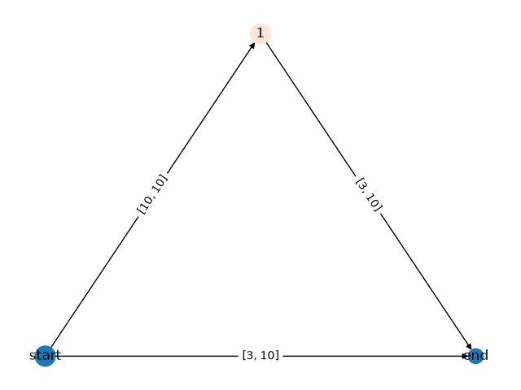
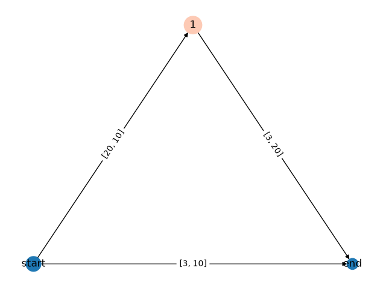
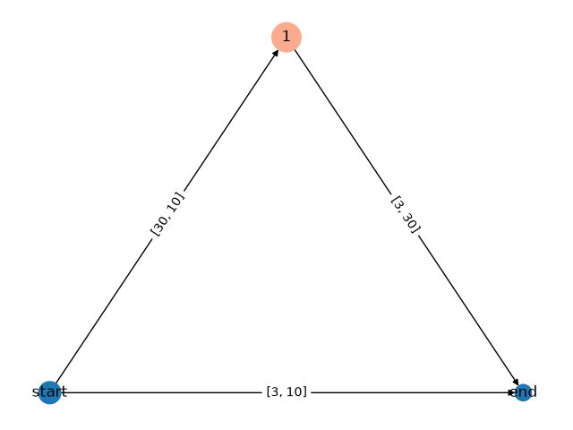
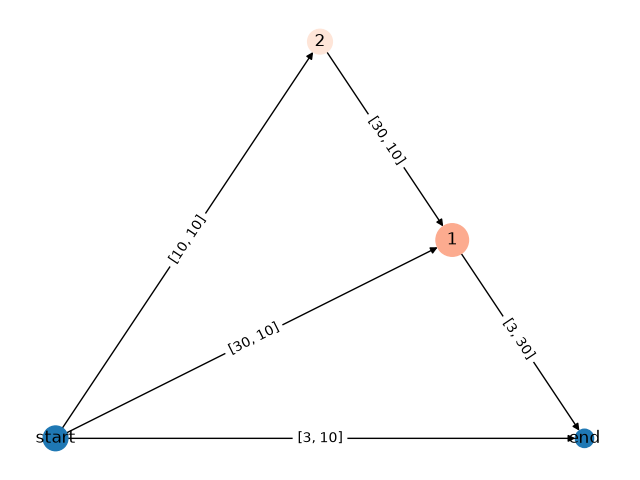
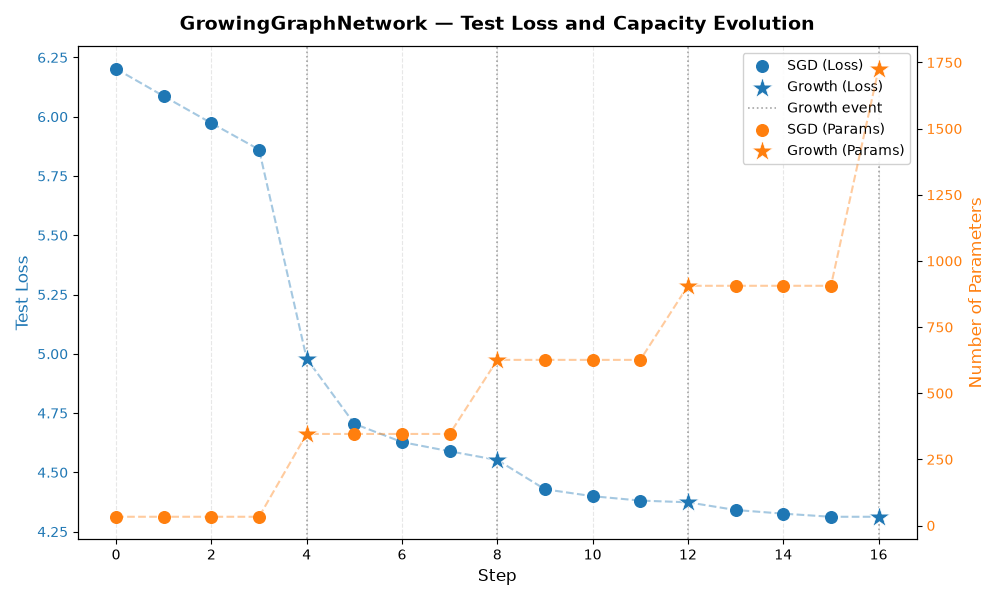

Note
Go to the end to download the full example code.
GrowingGraphNetwork tutorial#
A step-by-step guide to neural network growing on a directed acyclic graph (DAG) using the GroMo (Growing Modules) library.
What is GrowingGraphNetwork?#
While GrowingMLP grows neurons inside a fixed
sequence of layers, GrowingGraphNetwork operates on
a DAG topology where:
Nodes are merge modules that receive one or more incoming activations.
Edges are linear (or convolutional) layers connecting nodes.
New edges can be inserted between any pair of nodes, giving the network the freedom to grow its connectivity as well as its width.
Tutorial Overview#
In this tutorial, we will:
Set up the environment and data loaders
Define a
GraphModelwrappingGrowingGraphNetworkImplement the growth procedure: bottleneck detection, action selection, candidate evaluation, and weight application
Iteratively train and grow the DAG network
Inspect the evolving DAG topology
Visualise the evolution of loss and model capacity
Let’s get started!
Step 1: Environment Setup and Imports#
First, we import the necessary libraries:
import math
import operator
import random
import matplotlib.cm as mpl_cm
import matplotlib.colors as mpl_colors
import matplotlib.pyplot as plt
import networkx as nx
import torch
import torch.utils.data
from helpers.synthetic_data import MultiSinDataloader
from gromo.containers.growing_container import GrowingContainer
from gromo.containers.growing_dag import GrowingDAG
from gromo.containers.growing_graph_network import GrowingGraphNetwork
from gromo.modules.growing_module import MergeGrowingModule
from gromo.utils.training_utils import evaluate_model, gradient_descent
device = torch.device("cuda" if torch.cuda.is_available() else "cpu")
print(f"Using device: {device}")
Using device: cpu
Step 2: Define the data loaders#
We use a custom dataloader with synthetic data for training, validation, and testing.
The input \(x \sim \mathcal{N}(0_k, 1_k)\) and the target is defined as:
We need a validation set in addition to train / test because the growth procedure selects the best candidate action using held-out data (to avoid over-fitting to the training signal used for statistics accumulation).
in_features = 10
out_features = 3
train_data_loader = MultiSinDataloader(
nb_sample=10,
batch_size=1_000,
in_features=in_features,
out_features=out_features,
seed=0,
device=device,
)
val_data_loader = MultiSinDataloader(
nb_sample=10,
batch_size=500,
in_features=in_features,
out_features=out_features,
seed=1,
device=device,
)
test_data_loader = MultiSinDataloader(
nb_sample=1,
batch_size=1_000,
in_features=in_features,
out_features=out_features,
seed=2,
device=device,
)
Step 3: Define the GraphModel Architecture#
GraphModel is a thin wrapper around GrowingContainer
that delegates all computation to an internal
GrowingGraphNetwork (self.growing_dag).
Key design points#
GrowingGraphNetwork maintains a
GrowingDAGinternally. Nodes are merge modules; edges are linear layers.We attach a
torch.nn.SELUactivation to the output merge node so that the network has non-linearity before the final projection.set_growing_layersregisters the DAG with the container so that the standard growth bookkeeping (statistics, deltas, …) propagates correctly.
Method |
Description |
|---|---|
|
Flatten input, pass through DAG |
|
Same as forward but also returns the “growth” output used during candidate evaluation |
|
Register |
class GraphModel(GrowingContainer):
def __init__(
self,
in_features: int,
out_features: int,
neurons: int,
neuron_epochs: int,
neuron_lrate: float,
neuron_batch_size: int,
loss_fn: torch.nn.Module,
device: torch.device | str | None = None,
) -> None:
super().__init__(in_features, out_features, device)
self.growing_dag = GrowingGraphNetwork(
in_features=in_features,
out_features=out_features,
neurons=neurons,
neuron_epochs=neuron_epochs,
neuron_lrate=neuron_lrate,
neuron_batch_size=neuron_batch_size,
loss_fn=loss_fn,
layer_type="linear",
name="dag",
)
# Attach a SELU activation to the output merge node so the final
# representation is non-linear before the loss is computed.
self.growing_dag.dag.get_node_module(
self.growing_dag.dag.end
).post_merge_function = torch.nn.Sequential(
torch.nn.SELU(),
)
self.set_growing_layers()
def set_growing_layers(self) -> None:
self._growing_layers.append(self.growing_dag)
def forward(self, x: torch.Tensor) -> torch.Tensor:
x = torch.flatten(x, 1)
return self.growing_dag(x)
def extended_forward(self, x: torch.Tensor, mask: dict = {}):
x = torch.flatten(x, 1)
return self.growing_dag.extended_forward(x, mask=mask)
Step 4: Helper Functions#
The graph growth procedure is more involved than the MLP case because we must decide where in the DAG to add capacity, not only how much.
Three helper functions handle the statistics and bottleneck logic:
update_computation()— runs one pass over the training set, accumulating pre-activity gradients and input activations for every node.calculate_bottleneck()— for each node, computes a residual vector that measures how much of the gradient signal is not explained by the current edges. Nodes with a large residual norm are bottlenecks.grow()— orchestrates the full growth step:Enumerate candidate actions (possible new edges / expansions).
Accumulate statistics and compute optimal weight increments.
Identify the most important node via bottleneck norms.
Restrict the action space to that node and execute candidate expansions.
Line-search the best scaling factor on the training set, then rank candidates by validation loss.
Apply the winning action permanently.
def update_computation(
model: GraphModel,
dataloader: torch.utils.data.DataLoader,
criterion: torch.nn.Module,
) -> tuple[dict[str, torch.Tensor], dict[str, torch.Tensor]]:
"""Run a forward-backward pass and collect per-node statistics.
Parameters
----------
model: GraphModel
The graph model whose statistics buffers are already initialised.
dataloader: torch.utils.data.DataLoader
Training batches ``(X, Y)``.
criterion: torch.nn.Module
Loss function (must support ``reduction="mean"``).
Returns
-------
tuple[dict[str, torch.Tensor], dict[str, torch.Tensor]]
pre_activities_grad : dict[str, Tensor]
Concatenated pre-activation gradients for every non-root node.
inputs : dict[str, Tensor]
Concatenated input activations for every node.
"""
all_nodes = list(model.growing_dag.dag.nodes)
root_key = model.growing_dag.dag.root
pre_activities_grad = {
node: [] for node in all_nodes if (node != root_key) and ("start" not in node)
}
inputs = {node: [] for node in all_nodes}
for X, Y in dataloader:
X, Y = X.to(model.device), Y.to(model.device)
model.zero_grad()
pred = model(X)
loss = criterion(pred, Y)
loss.backward()
model.update_computation()
# Accumulate per-node activations and pre-activity gradients on CPU to
# avoid running out of GPU memory across batches.
for node_module in set(model.growing_dag.dag.get_all_node_modules()):
assert node_module.activity is not None
activity = node_module.activity.clone().detach().cpu()
inputs[node_module._name].append(activity)
if node_module._name == root_key:
continue
assert node_module.pre_activity is not None
assert node_module.pre_activity.grad is not None
pre_activities_grad[node_module._name].append(
node_module.pre_activity.grad.clone().detach().cpu()
)
pre_activities_grad = {
k: torch.cat(v) if v else torch.empty(0) for k, v in pre_activities_grad.items()
}
inputs = {k: torch.cat(v) if v else torch.empty(0) for k, v in inputs.items()}
return pre_activities_grad, inputs
For a node \(v\), the bottleneck vector is:
where \(\Delta W_e^*\) is the optimal weight increment for edge
\(e\) computed by compute_optimal_delta(). A large
\(\|b_v\|\) means that no currently proposed weight change can
explain the gradient at \(v\), i.e. the node is a bottleneck.
def calculate_bottleneck(
model: GraphModel,
pre_activities_grad: dict,
inputs: dict,
) -> dict[str, torch.Tensor]:
"""Compute the expressivity bottleneck for each node.
Parameters
----------
model: GraphModel
Graph model after ``compute_optimal_delta()`` has been called.
pre_activities_grad: dict
saved gradient of the pre-activities of each node.
inputs: dict
saved input of each node.
Returns
-------
bottleneck : dict[str, torch.Tensor]
Residual gradient vector for each node.
Raises
------
KeyError
if the activity gradient or the input of a node was not recorded
"""
bottleneck = {}
with torch.no_grad():
for node_module in set(model.growing_dag.dag.get_all_node_modules()):
if node_module._name == model.growing_dag.dag.root:
continue
if node_module._name not in pre_activities_grad:
raise KeyError(f"Activity gradient {node_module._name} was not recorded")
v_proj = pre_activities_grad[node_module._name]
for module in node_module.previous_modules:
prev_module = module.previous_module
if prev_module._name not in inputs:
if isinstance(prev_module.previous_modules[0], MergeGrowingModule):
prev_module = prev_module.previous_modules[0]
if prev_module._name not in inputs:
raise KeyError(f"Input activity {prev_module._name} was not recorded")
input_activity = inputs[prev_module._name]
v_proj = (
v_proj
- module.optimal_delta_layer(
input_activity.to(module.device) # type: ignore
).cpu()
)
bottleneck[node_module._name] = v_proj
return bottleneck
def grow(
model: GraphModel,
train_dataloader: torch.utils.data.DataLoader,
val_dataloader: torch.utils.data.DataLoader,
criterion: torch.nn.Module,
) -> None:
"""Grow the graph model by one step.
The procedure is:
1. Enumerate candidate actions (possible new edges / node expansions).
2. Run a forward-backward pass to accumulate statistics.
3. Compute optimal weight increments (:math:`\\Delta W^* = S^{-1} M`).
4. Identify the DAG node with the largest bottleneck norm.
5. Restrict candidates to that node and execute their weight expansions.
6. Line-search the scaling factor on the training set.
7. Score candidates on the validation set and keep the best one.
8. Apply the winning expansion permanently.
Parameters
----------
model: GraphModel
The ``GraphModel`` to grow.
train_dataloader: torch.utils.data.DataLoader
Used for statistics accumulation and line search.
val_dataloader: torch.utils.data.DataLoader
Used for final candidate ranking to avoid over-fitting.
criterion: torch.nn.Module
Loss function (``reduction="mean"``).
"""
# Enumerate what expansions are possible in the current DAG.
actions = model.growing_dag.dag.define_next_actions(expand_end=True)
model.init_computation()
pre_activities_grad, inputs = update_computation(model, train_dataloader, criterion)
# Solve for optimal weight increments for every candidate edge.
model.compute_optimal_delta()
bottleneck = calculate_bottleneck(model, pre_activities_grad, inputs)
del pre_activities_grad
model.reset_computation()
# Select the DAG node whose bottleneck norm is largest — that is where
# adding capacity will help the most.
bott_norms = {
key: torch.linalg.norm(val)
for key, val in bottleneck.items()
if key in model.growing_dag.dag.nodes
}
most_important_node = max(bott_norms.items(), key=operator.itemgetter(1))[0]
print(
f"Most important node: {most_important_node} "
f"(bottleneck norm = {bott_norms[most_important_node]:.4f})"
)
# Keep only actions that target the selected node.
actions = model.growing_dag.restrict_action_space(
actions, chosen_outputs=[most_important_node]
)
# Instantiate the candidate weight extensions (not yet applied).
model.growing_dag.execute_expansions(
actions=actions,
bottleneck=bottleneck,
input_B=inputs,
amplitude_factor=False,
evaluate=False,
)
# For each candidate, find the best scaling factor via line search on the
# training set, then record the validation loss for final ranking.
for action in actions:
print(f"Evaluating candidate: {action}")
mask = action.create_mask()
best_loss = float("inf")
best_value = 0.0
for value in [0.0, 0.05, 0.1, 0.5, 1.0]:
model.set_scaling_factor(value)
loss, _ = evaluate_model(
model=model,
dataloader=val_dataloader,
loss_function=criterion,
use_extended_model=True,
mask=mask,
device=device,
)
print(f" scaling={value:.1f} val_loss={loss:.4f}")
if loss < best_loss:
best_loss = loss
best_value = value
print(f" => best scaling={best_value:.1f} val_loss={best_loss:.4f}")
model.set_scaling_factor(best_value)
action.metrics["scaling_factor"] = best_value
action.metrics["loss_val"] = best_loss
# Pick the candidate with the lowest validation loss and apply it.
model.growing_dag.choose_growth_best_action(actions)
print(f"Chose option {model.growing_dag.chosen_action}")
model.growing_dag.apply_change()
def plot_graph(dag: GrowingDAG) -> None:
"""Plot an explanatory version of the DAG
Parameters
----------
dag : GrowingDAG
the growing dag
"""
def size_to_color(size):
cmap = mpl_cm.Reds # type: ignore
norm = mpl_colors.Normalize(vmin=0, vmax=100)
rgba = cmap(norm(size))
return mpl_colors.rgb2hex(rgba)
pos = nx.planar_layout(dag)
default_blue = "#1F78B4"
colors = [
size_to_color(dag.nodes[n]["size"])
if n not in (dag.root, dag.end)
else default_blue
for n in dag.nodes
]
sizes = [math.sqrt(dag.nodes[n]["size"]) * 100 for n in dag.nodes]
labels = {n: n.split("@")[0] for n in dag.nodes}
edge_labels = {
(u, v): str(list(dag.get_edge_module(u, v).weight.shape)) for u, v in dag.edges
}
plt.figure()
nx.draw(
dag,
pos,
node_color=colors,
node_size=sizes,
labels=labels,
with_labels=True,
arrows=True,
)
nx.draw_networkx_edge_labels(dag, pos, edge_labels=edge_labels)
plt.show()
Step 5: Create the Initial Model#
We initialise a GraphModel with:
Input size: 10 features
Output size: 3 targets
50 neurons per internal node (the DAG starts with a single hidden node)
A SELU activation on the output merge node
Setting fixed random seeds ensures reproducibility.
criterion = torch.nn.MSELoss()
torch.manual_seed(1)
random.seed(1)
model = GraphModel(
in_features=in_features,
out_features=out_features,
neurons=10,
neuron_epochs=100,
neuron_lrate=1e-2,
neuron_batch_size=256,
loss_fn=criterion,
device=device,
)
print("Initial model:")
print(model)
Initial model:
GraphModel(
(growing_dag): GrowingGraphNetwork(
(loss_fn): MSELoss()
(dag): GrowingDAG[dag](
Nodes (2):
start@dag (layer type: linear, hidden size: 10, activation: None)
end@dag (layer type: linear, hidden size: 3, activation: [SELU()])
Edges (1):
start@dag->end@dag
)
)
)
Step 6: Training Loop with Growth#
We alternate between:
SGD training — standard gradient descent to optimise current weights.
Growing — the DAG identifies its bottleneck node and adds a new edge (or expands an existing node) to relieve it.
What to observe:
Each growth step may add a new edge between distant nodes, increasing both the connectivity and the parameter count.
The validation-based candidate ranking prevents the growth from over-fitting to the training statistics.
Test loss should decrease monotonically across growth steps.
We present the growth history:
Growth Step 1 — Maximum bottleneck node: end.
Candidate actions increasing information throughput to node end:
1. create new node 1 from start to end.
Chose action (1).
Growth Step 2 — Maximum bottleneck node: 1.
Candidate actions increasing information throughput to node 1:
1. create node 2 from start to 1,
2. add neurons to node 1.
Chose action (2).
Growth Step 3 — Maximum bottleneck node: 1.
Candidate actions increasing information throughput to node 1:
1. create node 2 from start to 1,
2. add neurons to node 1.
Chose action (1).
Growth Step 4 — Maximum bottleneck node: 1.
Candidate actions increasing information throughput to node 1:
1. create node 3 from 2 to 1,
2. add neurons to node 1,
3. add neurons to node 2.
Chose action (1).
Final DAG structure:
Nodes (5):
start@dag (layer type: linear, hidden size: 10, activation: None)
end@dag (layer type: linear, hidden size: 3, activation: [SELU()])
1@dag (layer type: linear, hidden size: 20, activation: [Identity(), SELU()])
2@dag (layer type: linear, hidden size: 10, activation: [Identity(), SELU()])
3@dag (layer type: linear, hidden size: 10, activation: [Identity(), SELU()])
Edges (7):
start@dag->end@dag, start@dag->1@dag, start@dag->2@dag,
1@dag->end@dag, 2@dag->1@dag, 2@dag->3@dag, 3@dag->1@dag
growth_steps = 4
intermediate_epochs = 3
# Data collection for plotting
history = {
"step": [],
"test_loss": [],
"num_params": [],
"step_type": [], # "SGD" or "GRO"
}
def count_parameters(model: torch.nn.Module) -> int:
"""Count the number of trainable parameters in the model."""
return sum(p.numel() for p in model.parameters() if p.requires_grad)
test_loss, _ = evaluate_model(model, test_data_loader, criterion, device=device)
last_test_loss = test_loss
print(f"[N/A] Step 0 Test Loss: {test_loss:.4f}")
history["step"].append(0)
history["test_loss"].append(test_loss)
history["num_params"].append(count_parameters(model))
history["step_type"].append("SGD")
for step in range(growth_steps):
optimizer = torch.optim.SGD(model.parameters(), lr=0.01)
# --- SGD phase ---
for epoch in range(1, intermediate_epochs + 1):
gradient_descent(
model,
train_data_loader,
optimizer,
scheduler=None,
loss_function=criterion,
device=device,
)
test_loss, _ = evaluate_model(
model,
test_data_loader,
criterion,
device=device,
)
current_step = epoch + step * (intermediate_epochs + 1)
print(
f"[SGD] Step {current_step} "
f"Test Loss: {test_loss:.4f} ({test_loss - last_test_loss:+.4f})"
)
last_test_loss = test_loss
history["step"].append(current_step)
history["test_loss"].append(test_loss)
history["num_params"].append(count_parameters(model))
history["step_type"].append("SGD")
# --- Growth phase ---
grow(model, train_data_loader, val_data_loader, criterion)
print("Model after growing:")
print(model)
plot_graph(model.growing_dag.dag)
test_loss, _ = evaluate_model(model, test_data_loader, criterion, device=device)
current_step = (step + 1) * (intermediate_epochs + 1)
print(
f"[GRO] Step {current_step} "
f"Test Loss: {test_loss:.4f} ({test_loss - last_test_loss:+.4f})"
)
last_test_loss = test_loss
history["step"].append(current_step)
history["test_loss"].append(test_loss)
history["num_params"].append(count_parameters(model))
history["step_type"].append("GRO")




[N/A] Step 0 Test Loss: 6.2019
[SGD] Step 1 Test Loss: 6.0867 (-0.1152)
[SGD] Step 2 Test Loss: 5.9729 (-0.1138)
[SGD] Step 3 Test Loss: 5.8615 (-0.1114)
Most important node: end@dag (bottleneck norm = 0.2741)
/opt/hostedtoolcache/Python/3.11.15/x64/lib/python3.11/site-packages/torch/nn/modules/linear.py:124: UserWarning: Initializing zero-element tensors is a no-op
init.kaiming_uniform_(self.weight, a=math.sqrt(5))
Evaluating candidate: [Expansion]: New node 1@dag_a from start@dag to end@dag
scaling=0.0 val_loss=5.7406
scaling=0.1 val_loss=5.7340
scaling=0.1 val_loss=5.7144
scaling=0.5 val_loss=5.2599
scaling=1.0 val_loss=4.9637
=> best scaling=1.0 val_loss=4.9637
Chose option [Expansion]: New node 1@dag_a from start@dag to end@dag
Model after growing:
GraphModel(
(growing_dag): GrowingGraphNetwork(
(loss_fn): MSELoss()
(dag): GrowingDAG[dag](
Nodes (3):
start@dag (layer type: linear, hidden size: 10, activation: None)
end@dag (layer type: linear, hidden size: 3, activation: [SELU()])
1@dag (layer type: linear, hidden size: 10, activation: [Identity(), SELU()])
Edges (3):
start@dag->end@dag, start@dag->1@dag, 1@dag->end@dag
)
)
)
[GRO] Step 4 Test Loss: 4.9793 (-0.8822)
[SGD] Step 5 Test Loss: 4.7048 (-0.2745)
[SGD] Step 6 Test Loss: 4.6277 (-0.0770)
[SGD] Step 7 Test Loss: 4.5890 (-0.0387)
Most important node: 1@dag (bottleneck norm = 0.5506)
Evaluating candidate: [Expansion]: New node 2@dag_a from start@dag to 1@dag
scaling=0.0 val_loss=4.5189
scaling=0.1 val_loss=4.5221
scaling=0.1 val_loss=4.5306
scaling=0.5 val_loss=4.7947
scaling=1.0 val_loss=6.1616
=> best scaling=0.0 val_loss=4.5189
Evaluating candidate: [Expansion]: Expanding node 1@dag
scaling=0.0 val_loss=4.5189
scaling=0.1 val_loss=4.5198
scaling=0.1 val_loss=4.5214
scaling=0.5 val_loss=4.4830
scaling=1.0 val_loss=4.4793
=> best scaling=1.0 val_loss=4.4793
Chose option [Expansion]: Expanding node 1@dag
Model after growing:
GraphModel(
(growing_dag): GrowingGraphNetwork(
(loss_fn): MSELoss()
(dag): GrowingDAG[dag](
Nodes (3):
start@dag (layer type: linear, hidden size: 10, activation: None)
end@dag (layer type: linear, hidden size: 3, activation: [SELU()])
1@dag (layer type: linear, hidden size: 20, activation: [Identity(), SELU()])
Edges (3):
start@dag->end@dag, start@dag->1@dag, 1@dag->end@dag
)
)
)
[GRO] Step 8 Test Loss: 4.5522 (-0.0368)
[SGD] Step 9 Test Loss: 4.4288 (-0.1234)
[SGD] Step 10 Test Loss: 4.3995 (-0.0292)
[SGD] Step 11 Test Loss: 4.3810 (-0.0185)
Most important node: 1@dag (bottleneck norm = 0.7594)
Evaluating candidate: [Expansion]: New node 2@dag_a from start@dag to 1@dag
scaling=0.0 val_loss=4.2877
scaling=0.1 val_loss=4.2925
scaling=0.1 val_loss=4.3095
scaling=0.5 val_loss=5.6548
scaling=1.0 val_loss=19.6670
=> best scaling=0.0 val_loss=4.2877
Evaluating candidate: [Expansion]: Expanding node 1@dag
scaling=0.0 val_loss=4.2877
scaling=0.1 val_loss=4.2879
scaling=0.1 val_loss=4.2880
scaling=0.5 val_loss=4.2744
scaling=1.0 val_loss=5.1891
=> best scaling=0.5 val_loss=4.2744
Chose option [Expansion]: Expanding node 1@dag
Model after growing:
GraphModel(
(growing_dag): GrowingGraphNetwork(
(loss_fn): MSELoss()
(dag): GrowingDAG[dag](
Nodes (3):
start@dag (layer type: linear, hidden size: 10, activation: None)
end@dag (layer type: linear, hidden size: 3, activation: [SELU()])
1@dag (layer type: linear, hidden size: 30, activation: [Identity(), SELU()])
Edges (3):
start@dag->end@dag, start@dag->1@dag, 1@dag->end@dag
)
)
)
[GRO] Step 12 Test Loss: 4.3738 (-0.0072)
[SGD] Step 13 Test Loss: 4.3413 (-0.0325)
[SGD] Step 14 Test Loss: 4.3259 (-0.0154)
[SGD] Step 15 Test Loss: 4.3128 (-0.0131)
Most important node: 1@dag (bottleneck norm = 0.8217)
Evaluating candidate: [Expansion]: New node 2@dag_a from start@dag to 1@dag
scaling=0.0 val_loss=4.2074
scaling=0.1 val_loss=4.2146
scaling=0.1 val_loss=4.2486
scaling=0.5 val_loss=6.7066
scaling=1.0 val_loss=31.4663
=> best scaling=0.0 val_loss=4.2074
Evaluating candidate: [Expansion]: Expanding node 1@dag
scaling=0.0 val_loss=4.2074
scaling=0.1 val_loss=4.2078
scaling=0.1 val_loss=4.2087
scaling=0.5 val_loss=4.2392
scaling=1.0 val_loss=5.6249
=> best scaling=0.0 val_loss=4.2074
Chose option [Expansion]: New node 2@dag_a from start@dag to 1@dag
/home/runner/work/gromo/gromo/src/gromo/modules/growing_module.py:2147: UserWarning: input_extension_scaling is null. The input extension will have no effect.
warnings.warn(
Model after growing:
GraphModel(
(growing_dag): GrowingGraphNetwork(
(loss_fn): MSELoss()
(dag): GrowingDAG[dag](
Nodes (4):
start@dag (layer type: linear, hidden size: 10, activation: None)
end@dag (layer type: linear, hidden size: 3, activation: [SELU()])
1@dag (layer type: linear, hidden size: 30, activation: [Identity(), SELU()])
2@dag (layer type: linear, hidden size: 10, activation: [Identity(), SELU()])
Edges (5):
start@dag->end@dag, start@dag->1@dag, start@dag->2@dag, 1@dag->end@dag, 2@dag->1@dag
)
)
)
[GRO] Step 16 Test Loss: 4.3128 (+0.0000)
Step 7: Visualise Training Progress#
The figure below tracks two quantities across training steps:
Test loss (left y-axis, blue): how well the model generalises.
Number of parameters (right y-axis, orange): model capacity.
Vertical dotted lines mark each growth event. Circles (●) denote SGD steps; stars (★) denote growth steps.
fig, ax1 = plt.subplots(figsize=(10, 6))
sgd_indices = [i for i, t in enumerate(history["step_type"]) if t == "SGD"]
gro_indices = [i for i, t in enumerate(history["step_type"]) if t == "GRO"]
# --- Left y-axis: Test Loss ---
ax1.set_xlabel("Step", fontsize=12)
ax1.set_ylabel("Test Loss", color="tab:blue", fontsize=12)
ax1.plot(
history["step"],
history["test_loss"],
color="tab:blue",
alpha=0.4,
linewidth=1.5,
linestyle="--",
)
ax1.scatter(
[history["step"][i] for i in sgd_indices],
[history["test_loss"][i] for i in sgd_indices],
color="tab:blue",
marker="o",
s=70,
zorder=4,
label="SGD (Loss)",
)
ax1.scatter(
[history["step"][i] for i in gro_indices],
[history["test_loss"][i] for i in gro_indices],
color="tab:blue",
marker="*",
s=250,
zorder=5,
edgecolors="white",
linewidths=0.5,
label="Growth (Loss)",
)
ax1.tick_params(axis="y", labelcolor="tab:blue")
# --- Right y-axis: Number of Parameters ---
ax2 = ax1.twinx()
ax2.set_ylabel("Number of Parameters", color="tab:orange", fontsize=12)
ax2.plot(
history["step"],
history["num_params"],
color="tab:orange",
alpha=0.4,
linewidth=1.5,
linestyle="--",
)
ax2.scatter(
[history["step"][i] for i in sgd_indices],
[history["num_params"][i] for i in sgd_indices],
color="tab:orange",
marker="o",
s=70,
zorder=4,
label="SGD (Params)",
)
ax2.scatter(
[history["step"][i] for i in gro_indices],
[history["num_params"][i] for i in gro_indices],
color="tab:orange",
marker="*",
s=250,
zorder=5,
edgecolors="white",
linewidths=0.5,
label="Growth (Params)",
)
ax2.tick_params(axis="y", labelcolor="tab:orange")
# Mark growth events with vertical dotted lines
for i, idx in enumerate(gro_indices):
ax1.axvline(
x=history["step"][idx],
color="gray",
linestyle=":",
linewidth=1.2,
alpha=0.7,
label="Growth event" if i == 0 else None,
)
# Combined legend
lines1, labels1 = ax1.get_legend_handles_labels()
lines2, labels2 = ax2.get_legend_handles_labels()
ax1.legend(
lines1 + lines2,
labels1 + labels2,
loc="upper right",
framealpha=0.9,
fontsize=10,
)
plt.title(
"GrowingGraphNetwork — Test Loss and Capacity Evolution",
fontsize=14,
fontweight="bold",
pad=12,
)
ax1.grid(axis="x", linestyle="--", alpha=0.3)
fig.tight_layout()
plt.show()
print()

Total running time of the script: (0 minutes 49.810 seconds)